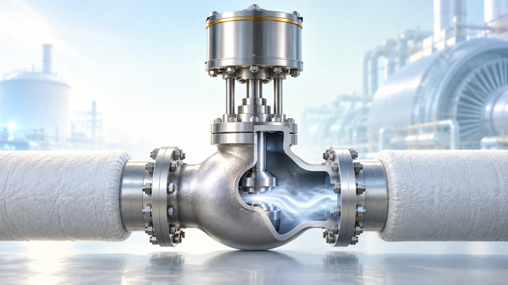
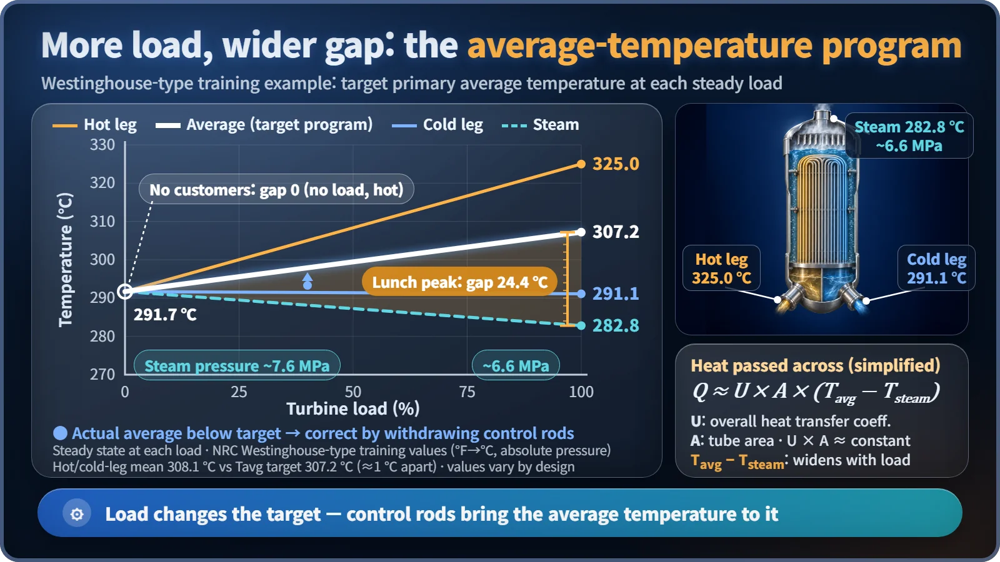

Plant Operation, Control & the Grid · 229
When the Waiters Grab Plates Faster, the Kitchen Speeds Up — Turbine Load Changes and Reactor Power
Open the turbine valve and cooler water flows back to the core, pulling reactor power up by itself; control rods then bring the average temperature to its programmed target.

In normal power operation of a pressurized water reactor, the reactor follows the turbine. When the turbine takes more steam, the water returning to the reactor cools, and the negative moderator temperature coefficient pulls reactor power up; control rods then bring the average coolant temperature to a programmed target for that load. [1]
"Raising output 5%. Opening the control valve." "Got it, following." That, boiled down, is the control-room exchange when output goes up. Surprisingly, the first thing to move is a valve on the turbine side, and the reactor follows.
Between the reactor and the turbine sits a "pickup counter"
Picture a restaurant kitchen where the colder the trays coming back, the faster the cooks work, all on their own. When the lunch rush starts and waiters grab plates faster, the counter empties, cooled trays stream back, and the cooks speed up without being told. In the plant, the waiters are the turbine, the pickup counter is the steam generator, the kitchen is the reactor, and the returning trays are the cooling water heading back to the reactor.
Five steps from one valve to the core
The reactor only heats the primary water, which boils secondary water into steam through thousands of steam generator tubes; the two never mix. When load rises:
- The turbine control valve opens wider and steam flow increases.
- Steam generator pressure falls, and so does the boiling temperature on the secondary side.
- The primary water gives up more heat, so the water returning in the cold leg is cooler.
- Cooler water is denser and slows neutrons better as the moderator, so fission happens more readily.
- Reactor power rises, under normal conditions where the moderator temperature coefficient is negative.
![Cutaway model of a pressurized water reactor loop with reactor, steam generator, steam line, turbine control valve and turbine-generator, an upper arrow showing energy flowing from reactor to turbine and a lower dashed arrow showing the effect of a load change running from turbine back to reactor, five numbered step cards from valve opening to reactor power rising, and the relation reactivity change approximately equals MTC times moderator temperature change, with the example minus 20 pcm per degree times minus 1.5 degrees equals plus 30 pcm](../../assets/images/theory/229-turbine-load-and-reactor-power/fig1-valve-to-core-chain.webp)
Reactivity change ≈ moderator temperature coefficient × change in moderator temperature
With a coefficient of −20 pcm/℃ (1 pcm is 0.001%), water cooling by 1.5 ℃ gives (−20) × (−1.5) = +30 pcm, a "slope" toward higher power rather than a percentage jump. The value is illustrative; in a large pressurized water reactor at power it lies roughly between 0 and −80 pcm/℃. As power rises, fuel and water heat back up, the rise slows, and the reactor settles at a new balance. This is self-regulation. [5]
So are the control rods just sitting there?
No. The balance reached by feedback alone has a lower average temperature, while the plant sets a target temperature for each load: the average-temperature program. In a Westinghouse-type example from U.S. NRC training material, the primary average temperature rises from 291.7 ℃ at 0% load to 307.2 ℃ at 100%, while steam pressure falls from about 7.6 MPa to 6.6 MPa (absolute). South Korean plants use a similar principle with design-specific values. [1] [4]

The heat crossing into the steam generator is roughly proportional to the gap between the primary average temperature and the steam temperature:
Heat transferred ≈ overall heat transfer coefficient × heat transfer area × (average temperature − steam temperature)
With tube area and material fixed, passing more heat means widening the gap, from 0 at no load to about 24 ℃ at full load in the example. The rod control system computes the target from the steam the turbine is actually taking, compares it with the actual average temperature, and withdraws rods bit by bit when load rises; because it also watches how fast reactor and turbine power drift apart, it starts moving early. Slow changes as fuel burns up are handled by adjusting dissolved boron. [2]
What if a whole batch of orders is canceled?
In the same training example, automatic control handles load changes of 10% at once or 5% per minute without tripping the reactor. For a sudden 50% load drop, steam dump (turbine bypass) valves send excess steam straight to the condenser: the dump takes 40% and the rods 10%. Anything more abrupt, and the protection system safely shuts the reactor down. [3]
Key takeaways
- In normal PWR power operation the turbine moves first and the reactor follows.
- More steam out → lower steam generator pressure → cooler cold leg → positive reactivity through the negative moderator temperature coefficient → higher power.
- Control rods bring the average temperature to the programmed target for each load, moving together with the feedback.
- Design limits in the example: 10% step or 5% per minute; larger drops use the steam dump, and beyond that the protection system shuts the reactor down safely.
The reactor can follow the turbine because physics moves before any human hand does, just as one cold tray coming back gets the whole kitchen busy.